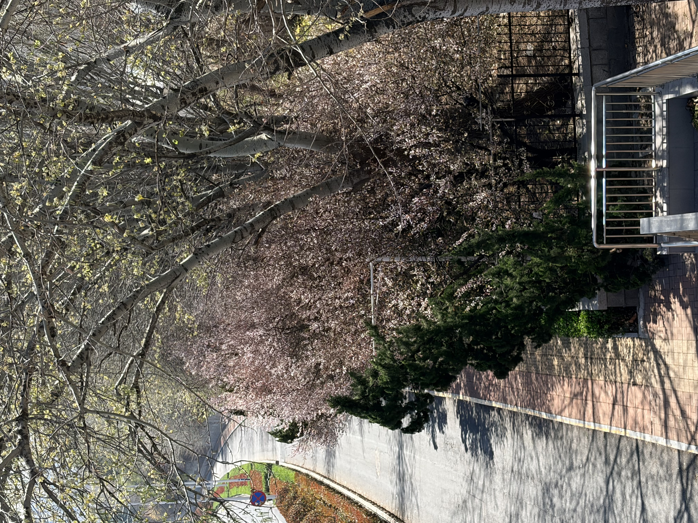
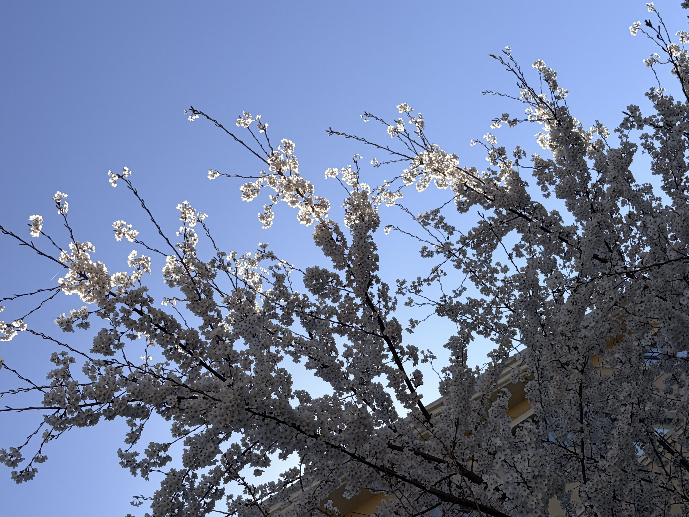

鲁东大学的春日，是一幅被春风晕开的水墨长卷，每一寸土地都浸着生机与温柔。从南门踏入校园，最先撞入眼帘的是主干道两侧的法桐，褪去冬日的萧瑟，嫩黄的新芽在枝头舒展，阳光透过枝叶筛下细碎的光斑，落在往来学子的肩头，像是时光写下的温柔注脚。沿着林荫道前行，便是校园里最动人的镜湖，湖面如镜，倒映着蓝天、白云与岸边的垂柳，春风拂过，柳条轻摆，搅碎一湖春色，泛起层层涟漪。湖畔的草坪早已换上翠绿的新装，蒲公英举着白色的绒球，二月兰在草丛间缀出紫色的星子，偶有白鹭掠过湖面，翅膀划破静谧，留下一道灵动的弧线。图书馆前的樱花大道是春日的顶流盛景，粉白的樱花如云似霞，风一吹，花瓣便簌簌落下，铺成一条浪漫的花径，学子们或驻足拍照，或在花下背书，青春与繁花相映，成了校园里最动人的风景。

